Hiroshima · 6 August
The United States drops an atomic bomb on Hiroshima. Nagasaki is bombed on 9 August. They remain the only atomic bombs ever used in war.
Click to advance · arrows · F fullscreen · space plays
World War II was fought from 1939 to 1945 across Europe, Africa, Asia, and the Pacific.
It began when Germany invaded Poland, and it became a war between the Allies and the Axis.
This issue follows why it started, how it turned, what it cost, and what it changed.
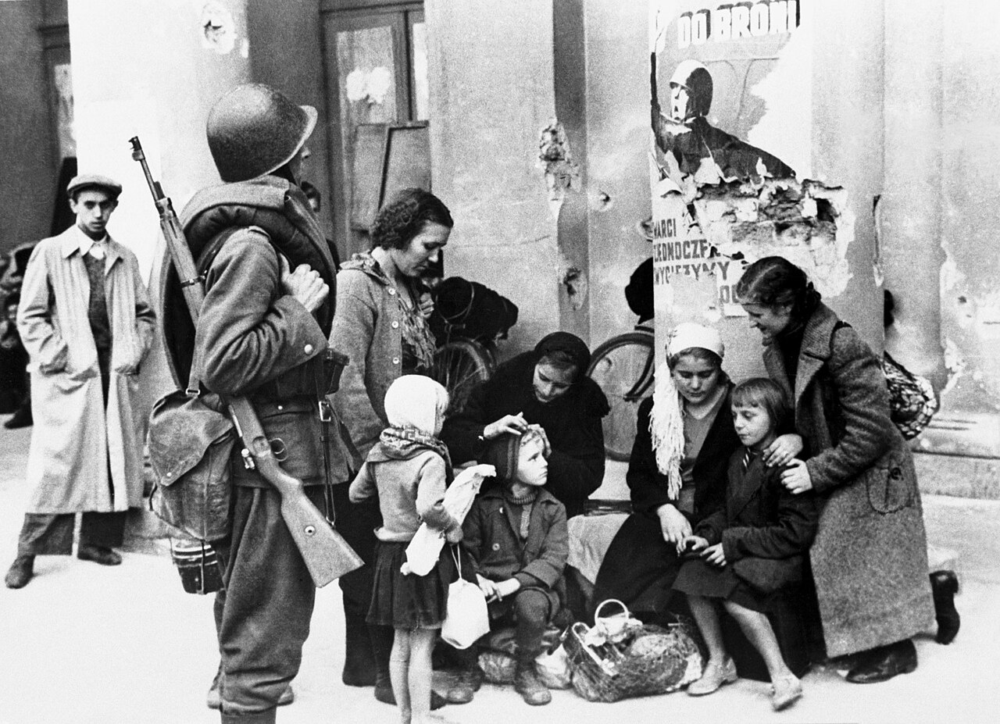
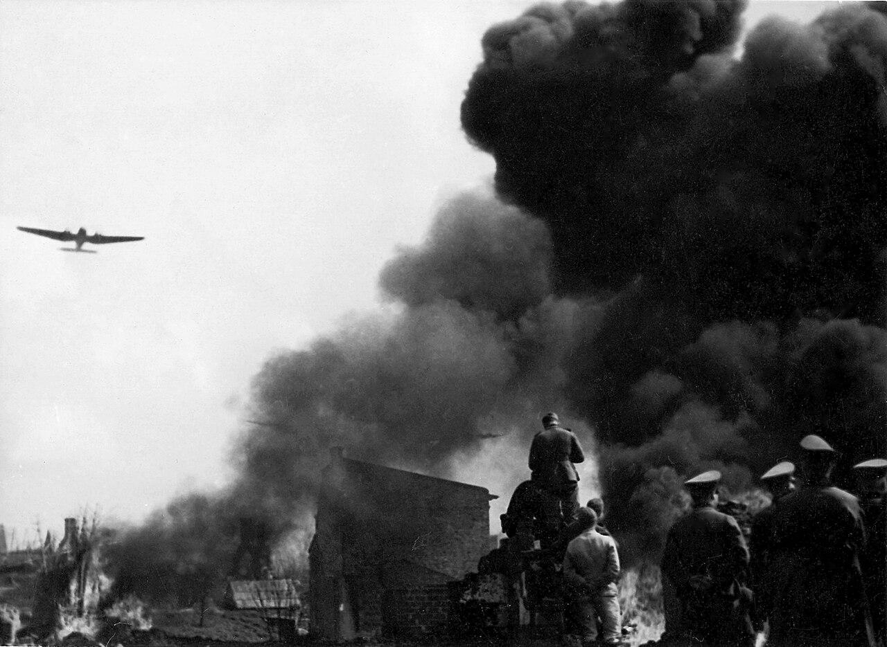
1 September. Germany invades Poland. Britain and France declare war two days later. The second world war has begun.
The Treaty of Versailles left Germany defeated, in debt, and politically unstable. The settlement of 1919 did not keep the peace.
In the 1930s dictatorships took power in Germany, Italy, and Japan and began taking territory by force.
Britain and France tried appeasement. The League of Nations could not stop the invasions that followed.
The first shots were fired in 1939. The causes were older.
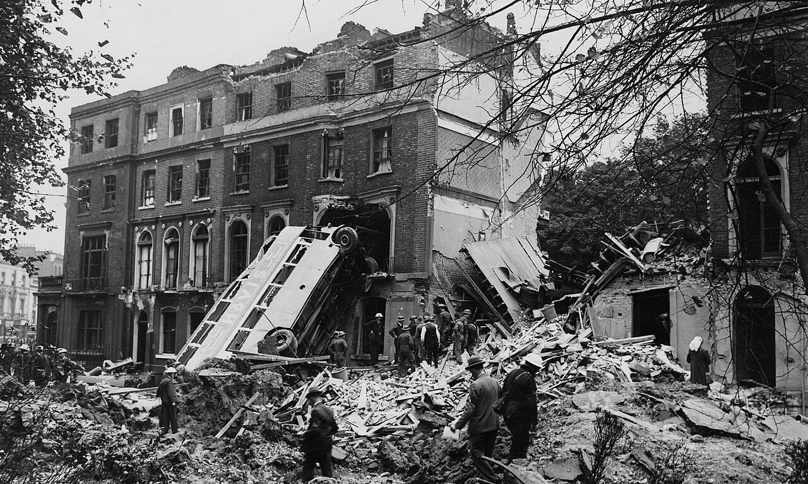
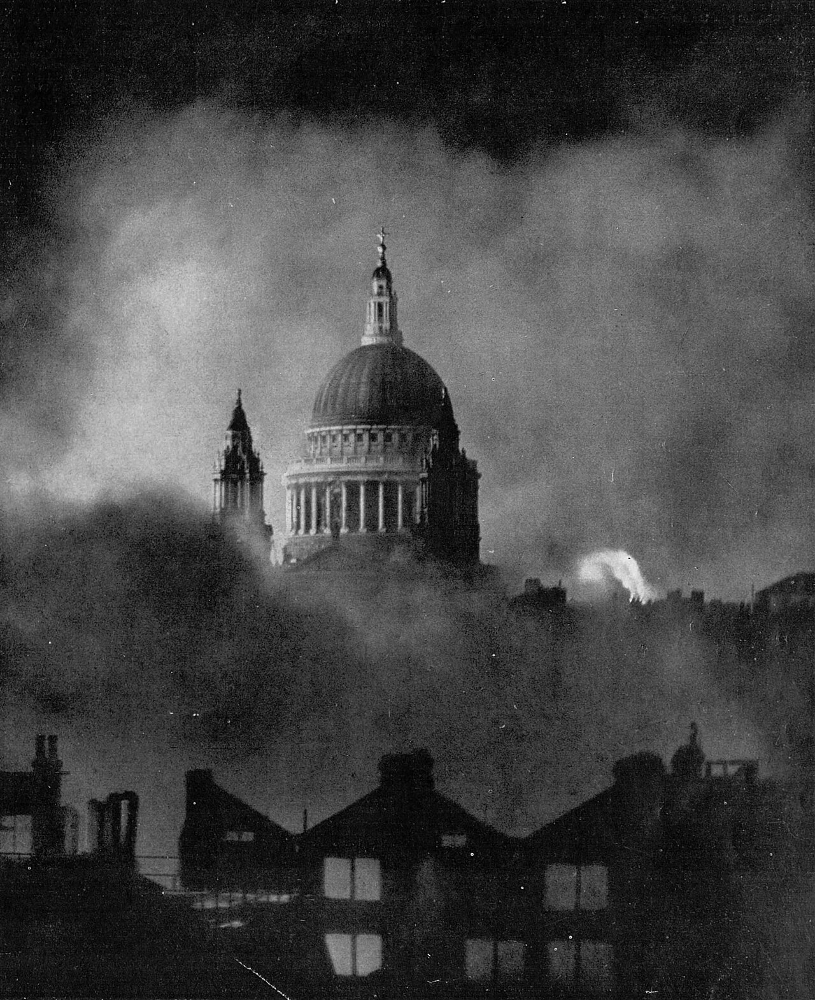
From July to October 1940 the Luftwaffe tried to break the Royal Air Force so Germany could invade. The RAF held. From September, the Blitz hit London and other cities. Winston Churchill, prime minister since May 1940, refused a separate peace.
St Paul’s Cathedral during the Blitz, 29 December 1940. Photograph by Herbert Mason.
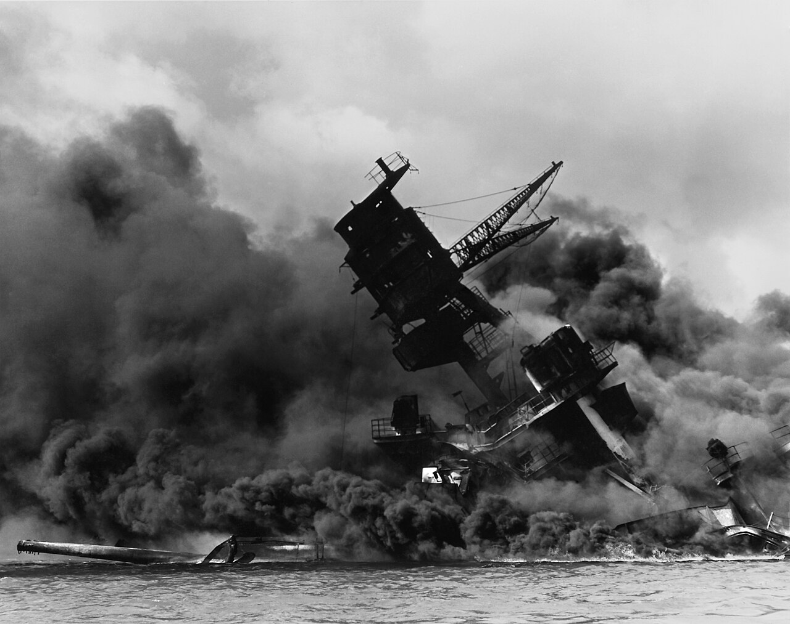
22 June 1941: Germany invades the Soviet Union and opens the Eastern Front. 7 December 1941: Japan attacks Pearl Harbor. The United States enters the war. The Axis is Germany, Italy, and Japan. The main Allies become Britain, the Soviet Union, the United States, and China.
USS Arizona burning at Pearl Harbor, 7 December 1941. U.S. National Archives.
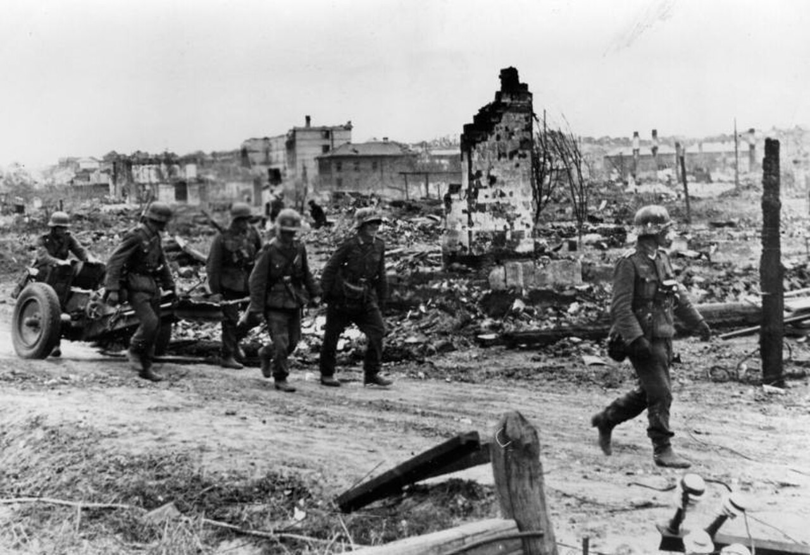
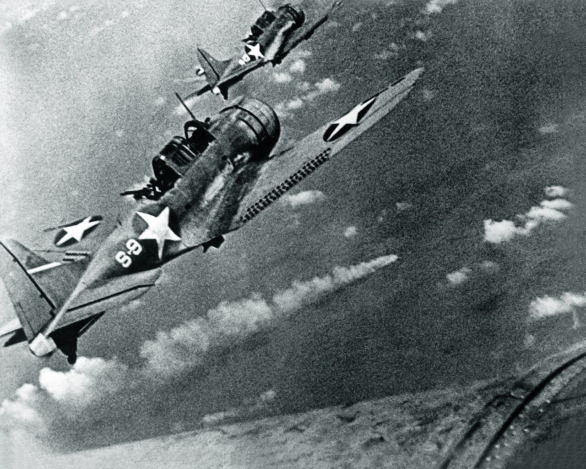
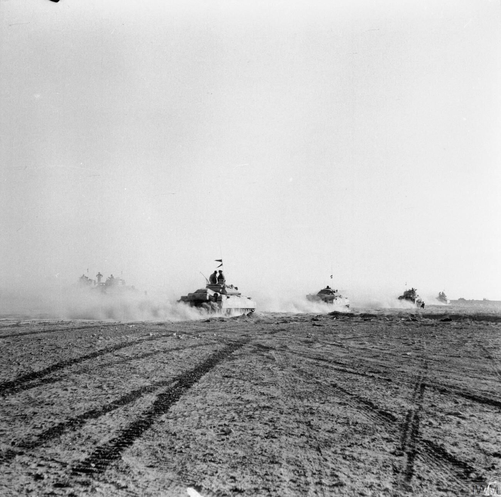
Nazi Germany and its collaborators murdered about six million Jews. Millions of other civilians were killed as well, including Roma and Sinti, disabled people, Poles, Soviet prisoners of war, and political prisoners.
Auschwitz-Birkenau was one killing center in a larger system of ghettos, camps, and mass shootings.
Remembering the victims is part of the historical record.
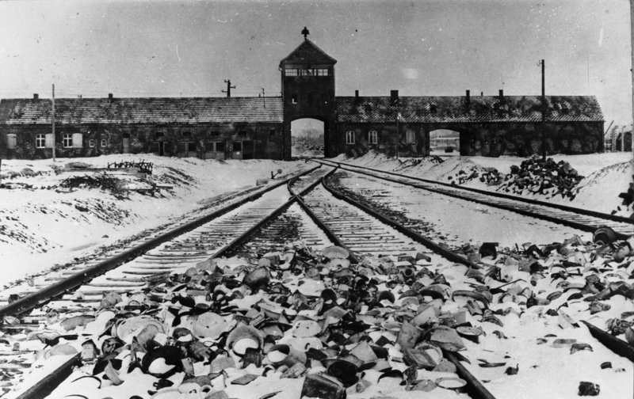
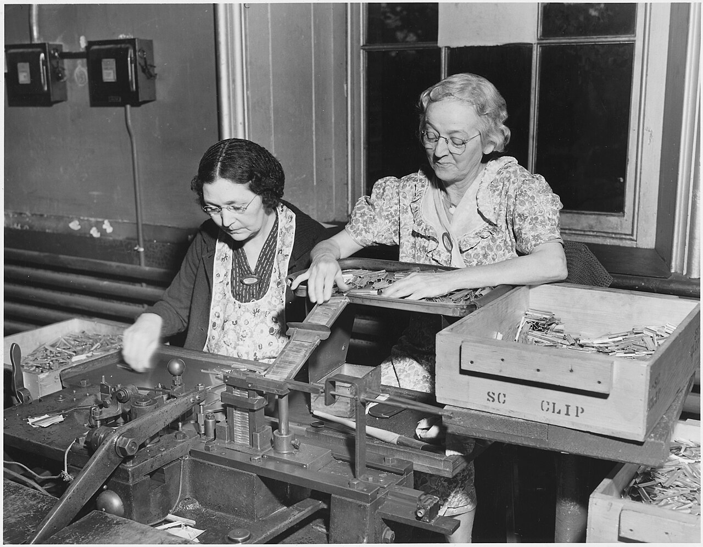
Governments rationed food and fuel. Women entered the factories and the services, and propaganda asked civilians to save and keep quiet about troop movements. In the United States, Japanese Americans on the West Coast were forced into incarceration camps, a policy the country later recognized as unjust.
Assembling cartridge clips at the Frankford Arsenal, Philadelphia. U.S. National Archives.
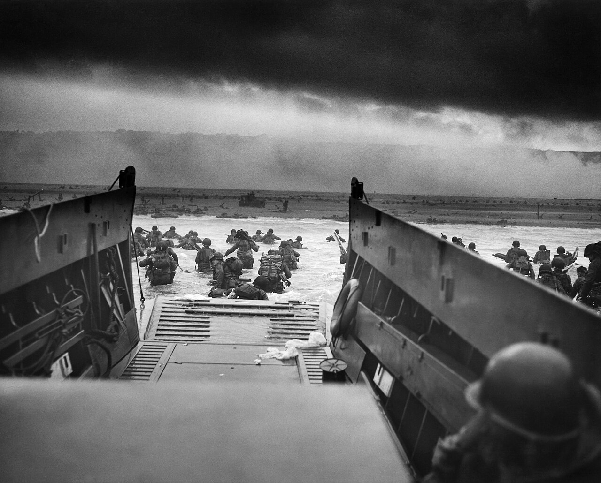
6 June 1944. Allied troops landed in Normandy and opened a western front in France. Through 1944 and 1945 the Allies liberated Western Europe while the Soviet army pushed from the east. Germany surrendered unconditionally. Victory in Europe, V-E Day, was 8 May 1945.
American soldiers wade toward Omaha Beach, 6 June 1944. Photograph by Robert F. Sargent, U.S. Coast Guard.
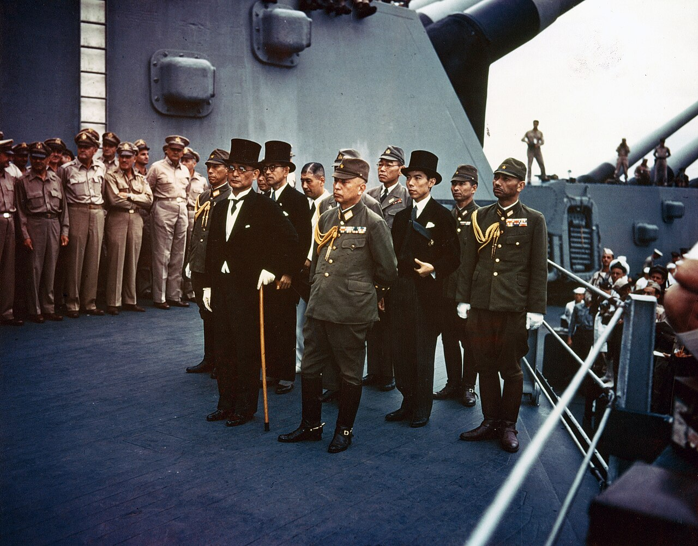
The United States drops an atomic bomb on Hiroshima. Nagasaki is bombed on 9 August. They remain the only atomic bombs ever used in war.
Japan announces it will surrender. The fighting of World War II is over. The document is signed on 2 September 1945.
15 August is remembered as Victory over Japan. The signing on 2 September made the surrender formal.
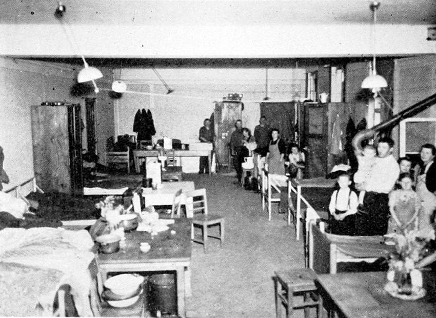
About 70 to 85 million people died. Most of them were civilians. Historians still debate the exact total. Empires weakened. The United States and the Soviet Union emerged as rival superpowers, and the Cold War followed. The United Nations was founded in 1945. In 1948 the Universal Declaration of Human Rights and the Genocide Convention put a legal language around crimes the war had made visible.
Displaced persons at Wittlich, Germany, 18 April 1945. U.S. Army.
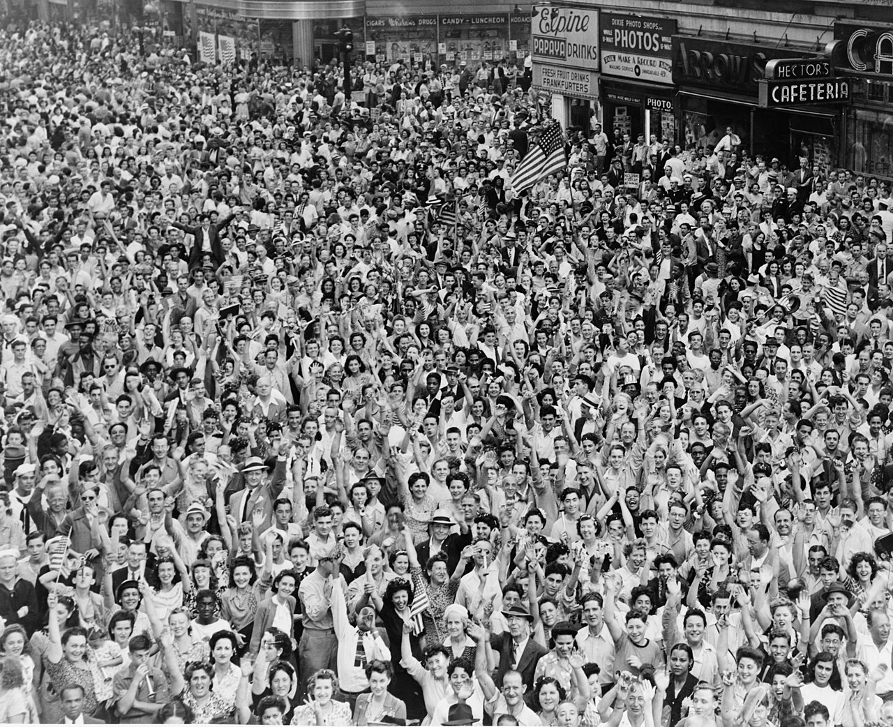
Photographs are historical documents. Figures are rounded. The page on the Holocaust is meant to be read without decoration.
Stalingrad photograph: German Federal Archive, Bild 183-B22222, CC BY-SA 3.0 de. Other photographs are public domain, credited in their captions.